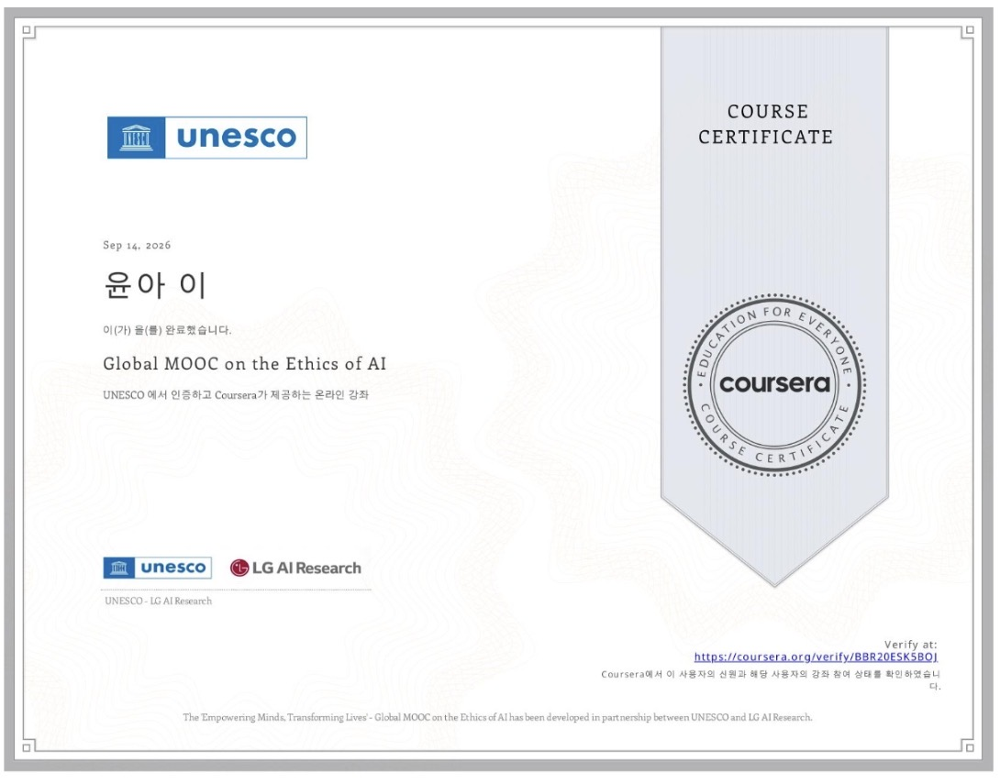

간단소개
안녕하세요. 맡은 일에 책임감을 가지고 성실하게 임하는 이윤아입니다. 새로운 환경에서도 빠르게 적응하고, 밝은 태도로 사람들과 원활하게 소통하는 것을 중요하게 생각합니다. 작은 일이라도 꼼꼼하게 마무리하며, 함께 일하는 사람들에게 신뢰를 줄 수 있는 사람이 되겠습니다.
기본 정보
이메일: 7anuo_y@naver.com
학력
- 한림성심대학교 간호학과
- 2026년 3월–현재 (재학 중)
- 마석고등학교
- 2023년 3월–2026년 1월
- 마석중학교
- 2020년 3월–2023년 1월
- 마석초등학교
- 2014년 3월–2020년 1월
Research and Activities
Certificate
